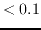
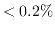
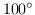

Next: Calibration of Data with Up: Calibration Methods Previous: Calibration Methods
In the solution process, we must consider the time variability of the various parameters. The gains vary fairly rapidly with time, and we typically solve for them every hour or so, with the assumption that they are steady over a solution interval of a few minutes - the calibrator scan. On the other hand, the leakage terms are assumed to be steady over the entire length of the observation. Our experience so far appears to support this. The bandpass function and the calibrator Q and U can also be assumed to remain unchanged during an observation. It is not possible to solve for a calibrators V (circularly polarised flux density) However, a calibrator's V is unlikely to be significant (  %).
If the calibrator is weakly polarised (  %), one quantity that it
is difficult to solve for is the absolute XY phase, absolute feed
alignment and absolute feed ellipticity.
Generally these quantities
on the reference antenna has to be either assumed, or measured, or derived
from observations of a strongly polarised calibrator. Unfortunately most
calibrators are only weakly polarised. Fortunately, however, the
alignment and ellipticity errors are small (assuming Faraday rotation is
negligible). Additionally, since November 1992,
the ATCA makes a good measurement of the absolute XY phase (accurate
to a few degrees).
If we assume that the absolute alignment and ellipticity errors of the
reference antenna are zero and that the XY phase measurements are
accurate, a ``polarisation position angle
calibrator'' is not needed.
%), one quantity that it
is difficult to solve for is the absolute XY phase, absolute feed
alignment and absolute feed ellipticity.
Generally these quantities
on the reference antenna has to be either assumed, or measured, or derived
from observations of a strongly polarised calibrator. Unfortunately most
calibrators are only weakly polarised. Fortunately, however, the
alignment and ellipticity errors are small (assuming Faraday rotation is
negligible). Additionally, since November 1992,
the ATCA makes a good measurement of the absolute XY phase (accurate
to a few degrees).
If we assume that the absolute alignment and ellipticity errors of the
reference antenna are zero and that the XY phase measurements are
accurate, a ``polarisation position angle
calibrator'' is not needed.
The recommended strategy for calibrating ATCA data is thus to observe a primary flux density calibrator, normally 1934-638, as well as a secondary phase calibrator close to the source. For polarimetric observations, as the polarisation of 1934-638 is known (in fact it is ), and the flux density is strong, it is possible to derive polarisation leakages from it given only a short observation (5-10 minutes). If you have good parallactic angle coverage of the secondary, it is possible to simultaneously determine the polarisation leakages as well as Q and U for the secondary (``good parallactic angle coverage'' means at least 5 observations spread over a parallactic angle range of ). This will be the normal case for a 12 hour observation of one source. Alternatively if there is poor parallactic angle coverage of the secondary (e.g. resulting from snapshot observations), the instrumental polarisation derived from 1934-638 can be used, and the Q and U of the secondary can still be determined.
The above strategy differs from that in the previous version of this guide. This is as prior to November 1992, the hardware to measure the XY phase produced unreliable results, particularly at 20 and 13 cm. Thus an observation of a strongly polarised calibrator was strongly advisable to determine XY phase. The strategy used for calibrating data prior to November 1992 will be somewhat different to that presented here.
Miriad manager